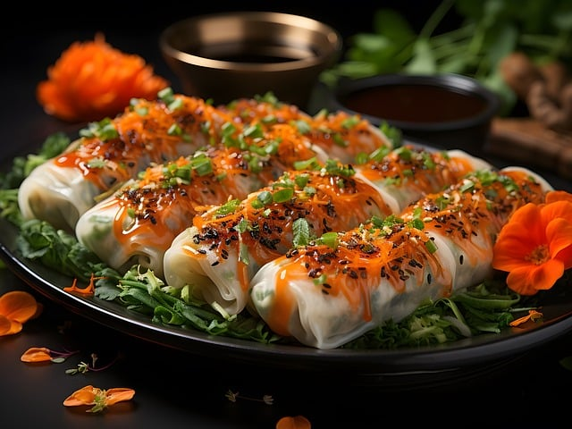

Pho

Pho is the quintessential Vietnamese dish – a delicate yet flavorful noodle soup that has captured the hearts and taste buds of food enthusiasts worldwide. At its core, pho is a harmonious blend of fragrant broth, tender slices of beef or chicken, and delightfully chewy rice noodles. The broth, which is the star of the show, is meticulously crafted by simmering beef bones, spices, and aromatic herbs for hours, resulting in a rich and complex flavor profile that is both comforting and deeply satisfying. Garnished with fresh herbs, bean sprouts, and a squeeze of lime, each spoonful of pho promises a delightful interplay of textures and flavors that will transport your taste buds straight to the vibrant streets of Vietnam.
Go to RecipeeVermacelli

Vietnamese vermicelli, or bún, is a delightful and refreshing noodle dish that exemplifies the vibrant flavors of Vietnamese cuisine. Delicate rice vermicelli noodles are tossed with an array of fresh vegetables, herbs, and proteins, creating a harmonious blend of textures and flavors. Whether it's the classic bún thịt nướng (grilled pork and vermicelli) or the vegetarian-friendly bún chay (vegetable vermicelli), each bite offers a burst of tantalizing flavors. The dish is often dressed with a zesty nuoc cham dipping sauce, adding a delightful tanginess that complements the freshness of the ingredients. Vermicelli is a true celebration of Vietnamese cuisine's emphasis on balance, lightness, and the skillful use of fresh, seasonal ingredients.
Go to RecipeeBanh Mi

Banh mi, the beloved Vietnamese sandwich, is a culinary masterpiece that fuses French and Vietnamese influences into a portable and delectable handheld treat. At its core, a crispy and airy Vietnamese baguette is generously stuffed with an assortment of savory fillings, ranging from succulent meats and pâtés to pickled vegetables and fresh herbs. Each bite is a symphony of flavors, with the crusty bread providing a perfect contrast to the tender fillings. The sandwich is often dressed with a tangy and slightly spicy sauce, adding an extra layer of complexity to the taste experience. Whether you're a fan of the classic bánh mì thịt (pork banh mi) or the vegetarian-friendly bánh mì chay, this iconic Vietnamese street food is sure to tantalize your taste buds and leave you craving for more.
Go to RecipeeSummer Rolls
Vietnamese summer rolls, or gỏi cuốn, are the epitome of freshness and lightness. These delicate rolls, wrapped in translucent rice paper, are a delightful medley of crisp vegetables, fragrant herbs, and tender proteins, all rolled together into a portable and visually stunning package. Each bite offers a refreshing crunch, complemented by the subtle flavors of the fillings and the delightful dipping sauce that accompanies them. Whether you opt for the classic shrimp and pork summer rolls or explore the vegetarian options, these rolls are a perfect representation of Vietnamese cuisine's focus on balance, simplicity, and the celebration of fresh, seasonal ingredients. Healthy, flavorful, and incredibly versatile, summer rolls are a must-try for anyone seeking a light and satisfying culinary experience.
Go to Recipee